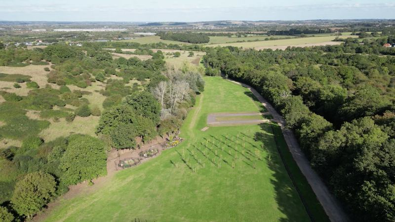
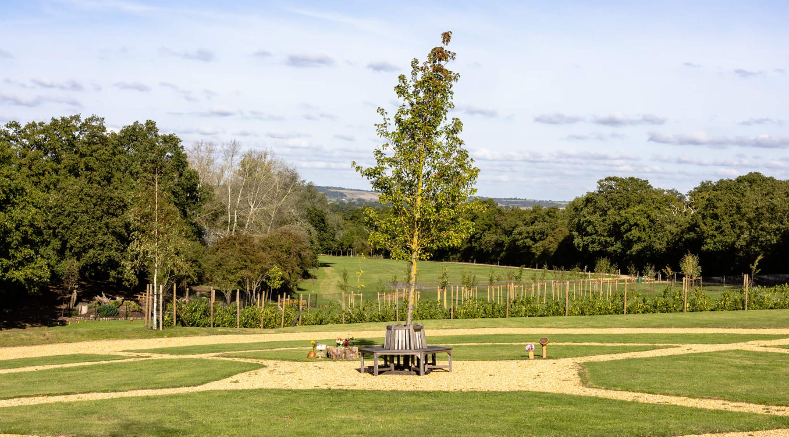
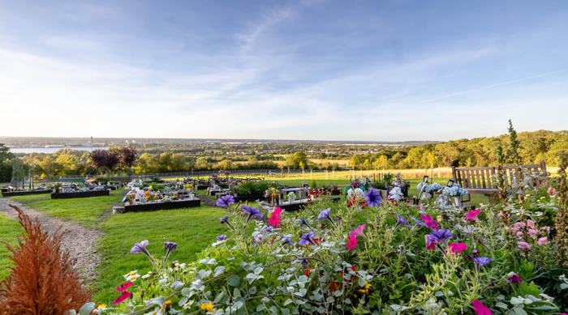
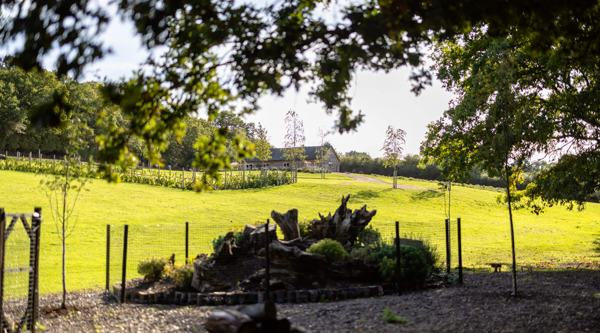
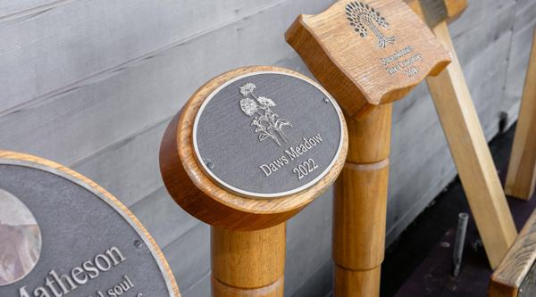
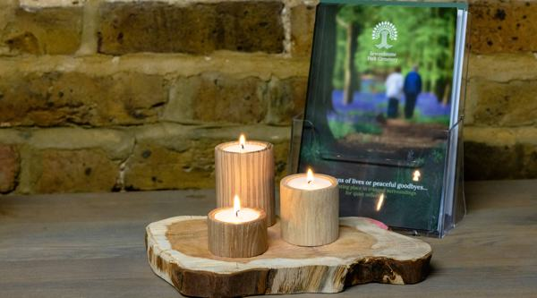
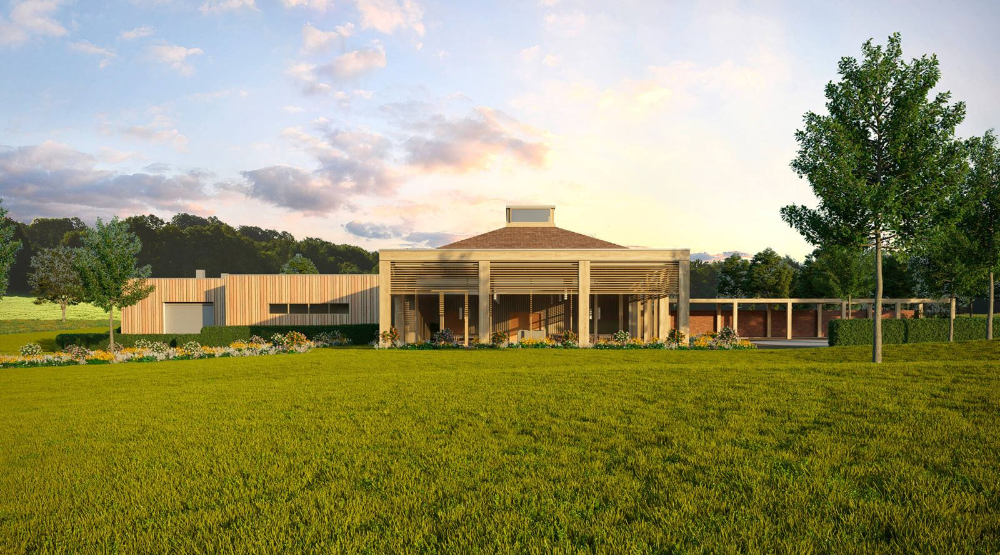
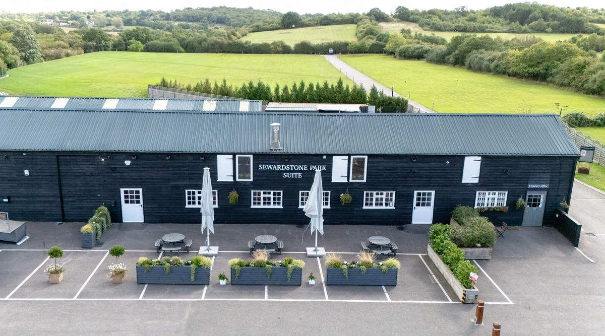

Burial at Daws Meadow
Gently rolling hills and copses where wild fallow deer and roe deer roam. Lawn graves, the Olive Garden and family gardens with space for a bench.
From £3,850 for a single lawn grave (50-year lease)

On the edge of Epping Forest
Natural burial, a new crematorium and quiet gardens in 200 acres of countryside, eleven miles from central London. Everyone is welcome, of every faith and none.
Our office is open Monday to Friday, 9am to 5pm. Weekends by appointment.
If someone has died
Losing someone is overwhelming. Our team will talk you through your options at your own pace, and take on as much of the arranging as you would like.
Talk to our teamBurial or cremation, a religious or non-religious service, a small gathering or a large one. We can show you around first if that would help.
Your funeral director usually makes the arrangements with us directly. If you don't have one yet, we can help.
We liaise with funeral directors, hospitals and, where needed, organisations overseas, so you have space to be with your family.
A member of our team is there to welcome your guests, direct them on arrival and make sure everything runs as you wished.
Burial, cremation and remembrance
Our costs are the same for everyone, wherever you live.

Gently rolling hills and copses where wild fallow deer and roe deer roam. Lawn graves, the Olive Garden and family gardens with space for a bench.
From £3,850 for a single lawn grave (50-year lease)

A secluded five-acre meadow set aside for burials of the Islamic faith, with every grave facing the Qibla and an outdoor prayer space.
Single, double and pre-purchase graves available
Our new crematorium has a light-filled chapel with views across the park, private family rooms and quiet courtyards.
Services from £775 · Unattended cremation £495

The Prime Circle, family plots, a place beneath an evergreen tree, or scattering in the Stumpery Garden.
Scattering £450 · Ash burial from £900

Engraved oak posts and plaques, benches, planting boxes and living memorials such as bird, bee and bat boxes, made from renewable timber by our own woodcarvers.
Oak plaques from £565

Choose your own resting place and buy your grave at today's prices, so your family won't have to make those decisions later.
Talk it through with us, with no obligation
For babies and children, Daws Meadow has a dedicated, carefully tended area at its heart. Funerals for children under 18 are provided without charge, for burial and for cremation.

New at Sewardstone Park
Designed to sit quietly in the landscape, in cedar and soft natural tones. Inside, the chapel is filled with light, with wide windows looking out over the park.
Clear prices
The same prices for everyone, wherever you live. Full payment is due before the day of the funeral; we accept bank transfer, debit and credit cards.
Graves are on a 50-year lease, which can be extended.
Ash plots are on a 15-year lease unless stated.
Full price lists: crematorium · burial · ash burial
“I wanted to express my sincere gratitude for your unwavering support and going above and beyond to assist us in laying our mum to rest. We cannot speak highly enough about you and your team.”
Visit us
Attending a funeral? Our team will be there to meet you and show you the way.
| Monday to Friday | 9am – 5pm |
|---|---|
| Weekends and bank holidays | By appointment |
| Christmas Day, Boxing Day, Easter Sunday | Closed |
| January – February | 9am – 4pm |
|---|---|
| March | 9am – 5pm |
| April – August | 9am – 6pm |
| September – December | 9am – 4pm |
| Weekends and bank holidays | 9am – 5pm summer, 4pm winter |

Questions families ask us
Yes. Everybody is welcome, wherever they live, and there are no extra charges for living outside the borough.
You may like to book a visit first; we're glad to show you around or talk you through the options. Once you've decided, your funeral director will usually make the arrangements with us directly.
Both. We work with your chosen officiant or celebrant, or can suggest one, and are experienced in the requirements of many faiths and cultural traditions.
Our standard lease is 50 years. A longer term can be agreed at the time, and leases can be extended later.
Yes. The Sewardstone Park Suite at Netherhouse Farm hosts receptions and memorial gatherings for 25 to over 200 guests, with parking for 50 cars.
By bank transfer, debit card or credit card. Full payment is due before the day of the funeral.
Whether you're arranging a funeral now, planning ahead or would simply like to visit, please get in touch.